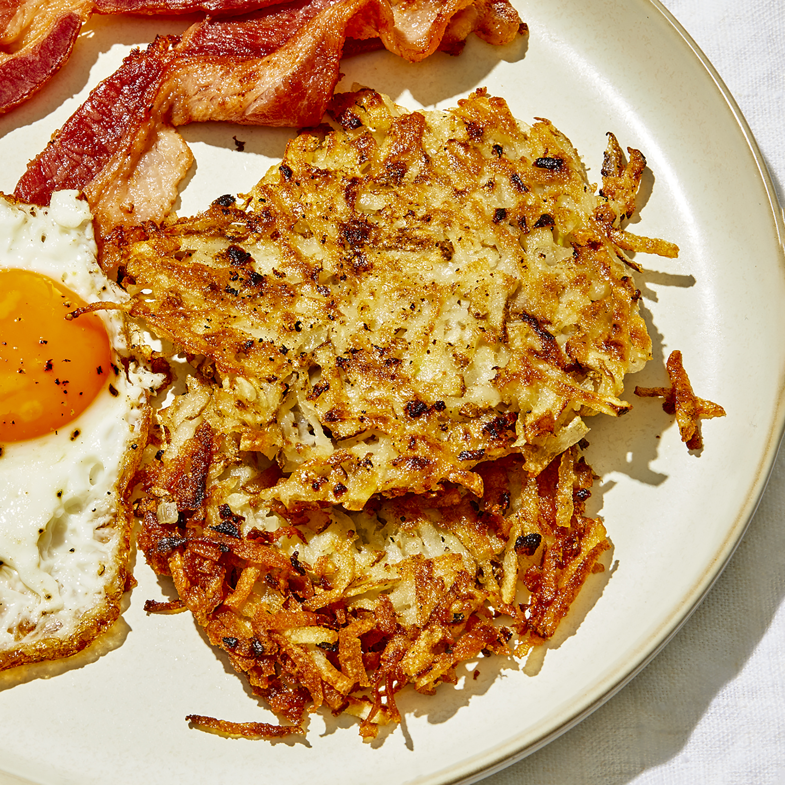

Crispy hash browns
Back to home

Description
This recipe doesn't require much thought early in the morning, and tastes great!
Ingredients
- 2 medium russet potatoes, shredded
- 1/2 medium onion, finely chopped
- 1/4 cup all-purpose flour
- 1 egg
- 1 cup oil for frying, or as needed
- salt and pepper to taste
Steps
- Rinse shredded potatoes until water is clear, the drain and squeeze dry. Place shreds in a bowl and mix in the
onion, flour, and eggs until evenly distributed
- Heat about 1/4 inch of oil in a large heavy skillet over medium-high heat. When oil is sizzling hot, place
potatoes into the pan in a 1/2 inch thick layer. Cover the whole bottom of the pan, or make separate piles like
pancakes
- Cook until nicely browned on the bottom, then flip over and brown on the other side. It should take at least 5
minutes per side. If you are cooking them in one big piece, it can be cut into quarters for easier flipping.
- Remove from pan, and drain on paper towels. Season with salt and pepper and serve immediately.